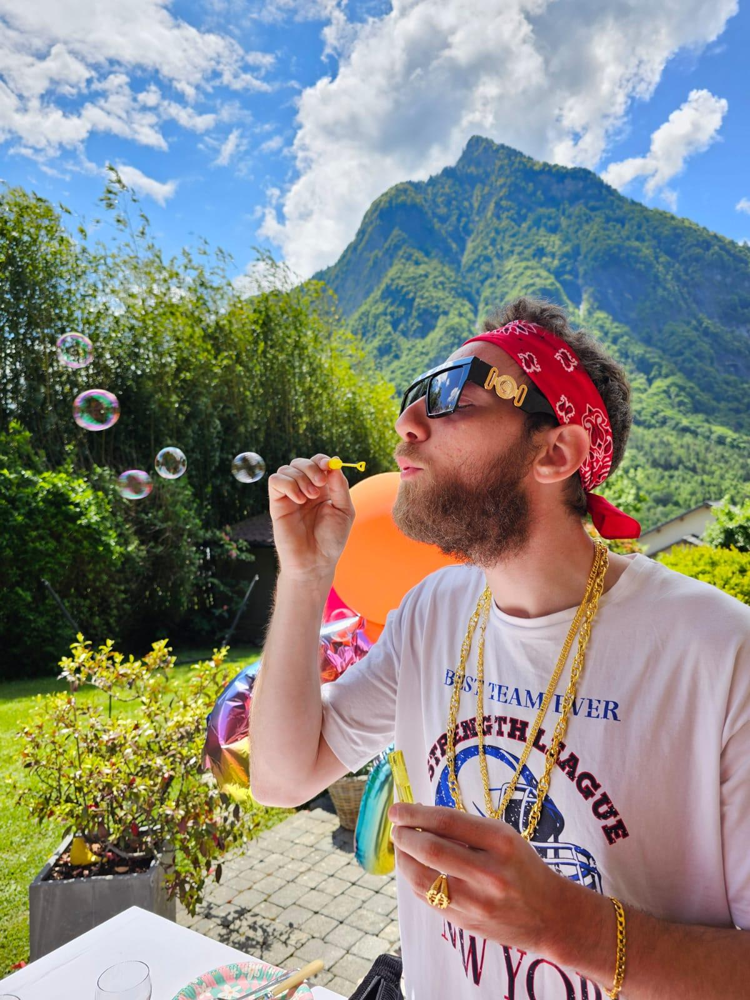
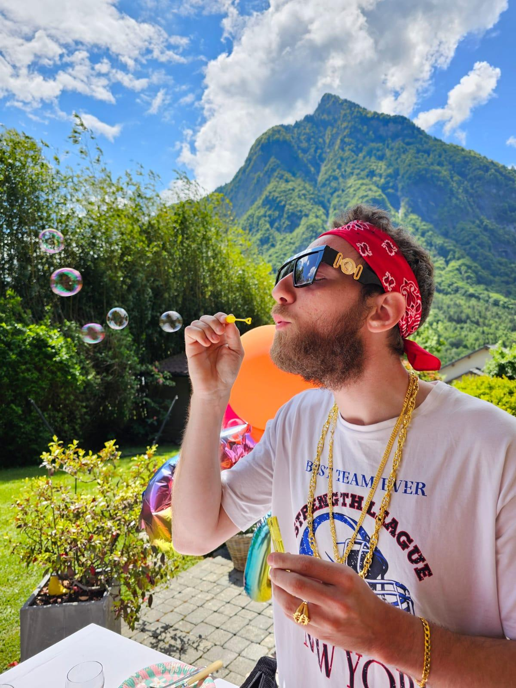
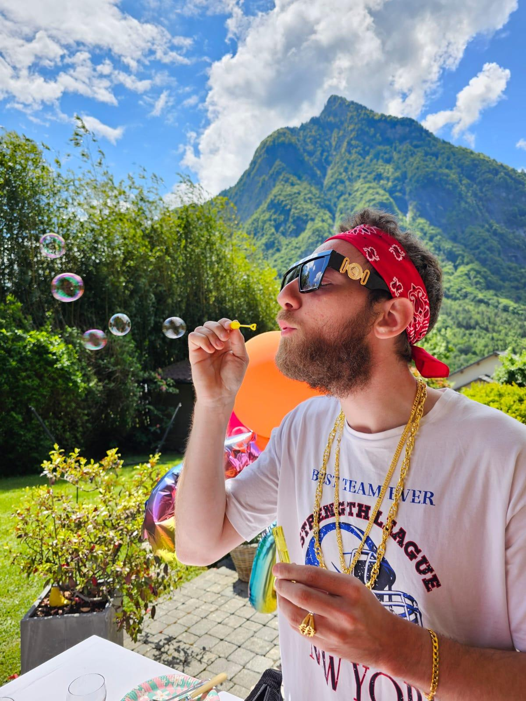
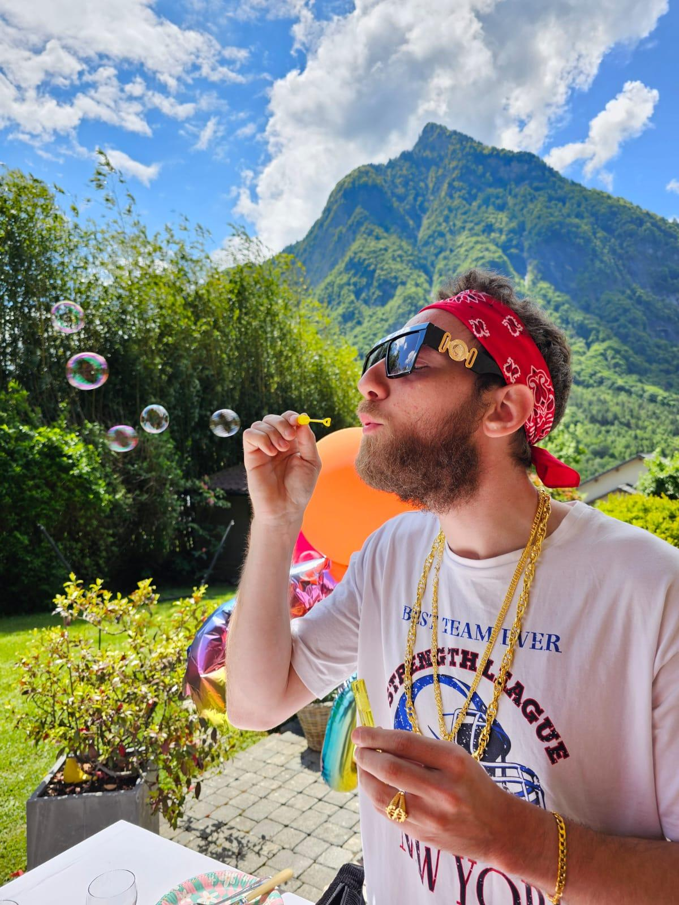

Je suis..
Né en Savoie, en janvier 1995. J'ai grandi ici, entre montagnes et lacs.
Aujourd'hui, j'habite dans une petite commune proche de Chambéry.
Le cadre est calme, et reposant. J'apprécie la qualité de vie,
l'air pur et les paysages, tout en restant connecté.
On dit souvent de moi que je suis méthodique et fiable. J’aime aller au fond des choses, comprendre les mécanismes,
les logiques cachées derrière ce qui nous entoure. Mon esprit curieux me pousse constamment à apprendre et à explorer.
Le sport a occupé une grande place dans ma vie, il m’a transmis des valeurs solides : sens de l’engagement, goût de l’effort, et une persévérance à toute épreuve.
Mes études
J’ai repris mes études en 2020 avec un DU au Campus Numérique, qui m’a permis d’acquérir des bases solides. J’ai ensuite poursuivi avec une licence en Informatique aux Charmilles, où j’ai approfondi mes connaissances, notamment en réseau et en informatique générale. Toujours animé par l’envie d’apprendre, j’ai intégré un Master en Ingénierie Informatique et Systèmes d’Information à l’EPSI.
Chaque école m’a apporté une richesse particulière : le Campus Numérique m’a initié au développement, les Charmilles l'informatique au sens large — et le master m’a ouvert aux notions de management et de systèmes d'information.
Les jeux !
Entre deux lignes de code, je me détends sur des jeux en ligne, seul ou avec des amis. J’ai aussi monté ma propre config — une expérience que je recommande à tous !
Configuration :
- Carte mère : Asus rog STRIX B650E-F
- Processeur : Ryzen 7800X3D
- Carte graphique : Nvidia RTX 4060Ti (16G)
- RAM : Corsair Vengeance DDR5 (16G x2)
- Alimentation : Corsair RM850x 80 plus gold
- Boitier : Deepcool CH650 Digital
- Ventirad : DeepCool LS720 SE 360mn
- Clavier : Apex Pro steelSeries
- Souris : SteelSeries Rival 5
La fête..
Il faut bien relâcher la pression entre deux compilations qui plantent. Je profite de ces moments pour changer de cadre, passer du mode “débogage” au mode “déconnexion totale”, et souvent rigoler jusqu’à ne plus sentir mes joues.
Certains sortent leur meilleure tenue, moi je mise tout sur mon stock de playlists douteuses et mon expertise en Beer-pong (franchement je suis pas mauvais quoi)
Ce n’est pas qu’une simple pause : c’est un bon rappel que l’équilibre, ça passe aussi par ces instants spontanés, imparfaits, mais sincères.

 


 
